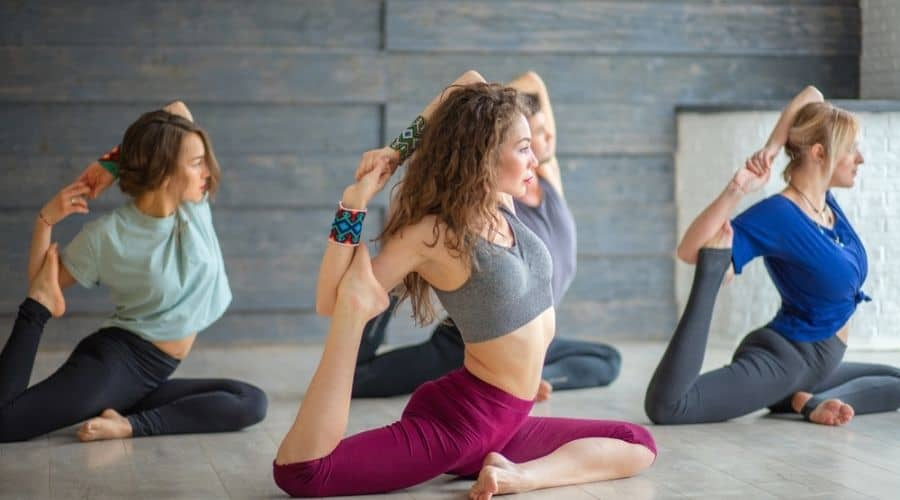

1.Ashtanga yoga
This type of yoga practice uses ancient yoga teachings. However, it became popular during the 1970s. Ashtanga applies the same poses and sequences that rapidly link every movement to breath.
2.Bikram yoga
People practice Bikram yoga, also known as hot yoga, in artificially heated rooms at a temperature of nearly 105oF and 40% humidity. It consists of 26 poses and a sequence of two breathing exercises.
3.Hatha yoga
This is a generic term for any type of yoga that teaches physical poses. Hatha classes usually serve as a gentle introduction to the basic poses of yoga.
4.Iyengar yoga
This type of yoga practice focuses on finding the correct alignment in each pose with the help of a range of props, such as blocks, blankets, straps, chairs, and bolsters.
5.Kripalu yoga
This type teaches practitioners to know, accept, and learn from the body. A student of Kripalu yoga learns to find their own level of practice by looking inward.
The classes usually begin with breathing exercises and gentle stretches, followed by a series of individual poses and final relaxation.
6.Kundalini yoga

Kundalini yoga is a system of meditation that aims to release pent-up energy.
A Kundalini yoga class typically begins with chanting and ends with singing. In between, it features asana, pranayama, and meditation that aim to create a specific outcome.
7.Power yoga
In the late 1980s, practitioners developed this active and athletic type of yoga based on the traditional Ashtanga system.
8.Sivananda
This system uses a five point philosophy as its foundation.
This philosophy maintains that proper breathing, relaxation, diet, exercise, and positive thinking work together to create a healthy yogic lifestyle.
People practicing Sivananda use 12 basic asanas, which they precede with Sun Salutations and follow with Savasana.
9.Viniyoga
Viniyoga focuses on form over function, breath and adaptation, repetition and holding, and the art and science of sequencing.
10.Yin yoga
Yin yoga places its focus on holding passive poses for long periods of time. This style of yoga targets deep tissues, ligaments, joints, bones, and fascia.
11.Prenatal yoga
Prenatal yoga uses poses that practitioners have created with pregnant people in mind. This yoga style can help people get back into shape after giving birth, and support health during pregnancy.
12.Restorative yoga
This is a relaxing method of yoga. A person spends a restorative yoga class in four or five simple poses, using props such as blankets and bolsters to sink into deep relaxation without exerting any effort when holding the pose.